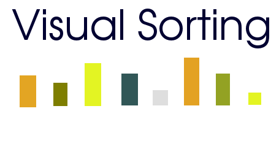

Erste Schritte
- Sortierverfahren hinzufügen
In der oberen Toolbar befindet sich eine ausfahrbare Liste mit allen vorhandenen Sortieralgorithmen, die zur Auswahl stehen. Durch betätigen
des Buttons wird ein neue Oberfläche, mit einer visualsierten Liste, erstellt. Es besteht natürlich auch die Möglichkeit weitere
Oberflächen hinzufügen. Hierdurch können beispielsweiße Sortieralgorithmen in ihrer Laufzeit miteinander verglichen werden.
- Animation starten/stoppen/reseten
Um die Animation zu starten betätigen Sie einfach . Nach dem Betätigen des Starts, kann die laufende
Animation über den gleichen Button pausiert werden.
- Elemente der Sortierliste festlegen
Es besteht die Möglichkeit die Anzahl der zu sortiernden Elemente festzulegen. Hierbei werden Zufallselemente mit der gewünschten Anzahl automatisch
erstellt. Falls es notwendig erscheint, können die zu sortierenden Elemente manuell, auch einzelt festgelegt werden.